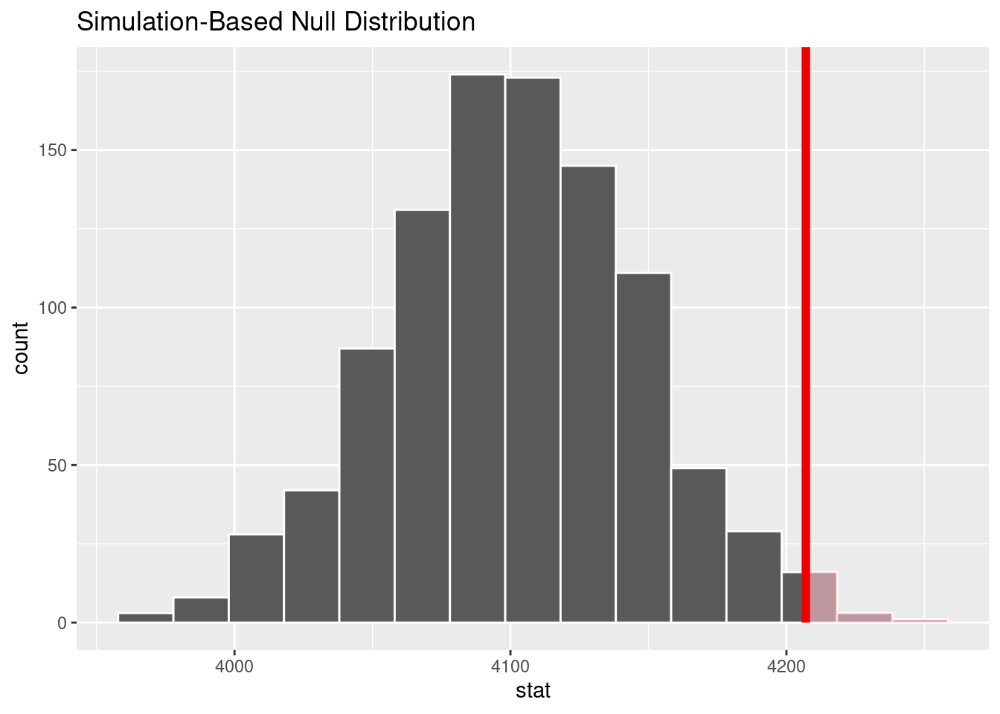
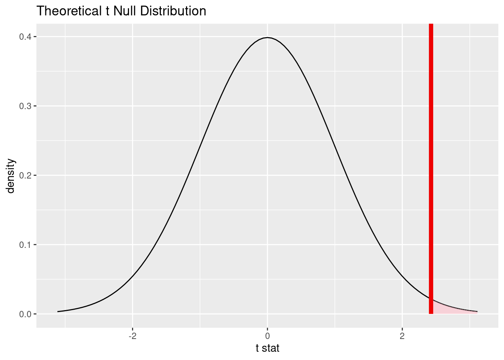
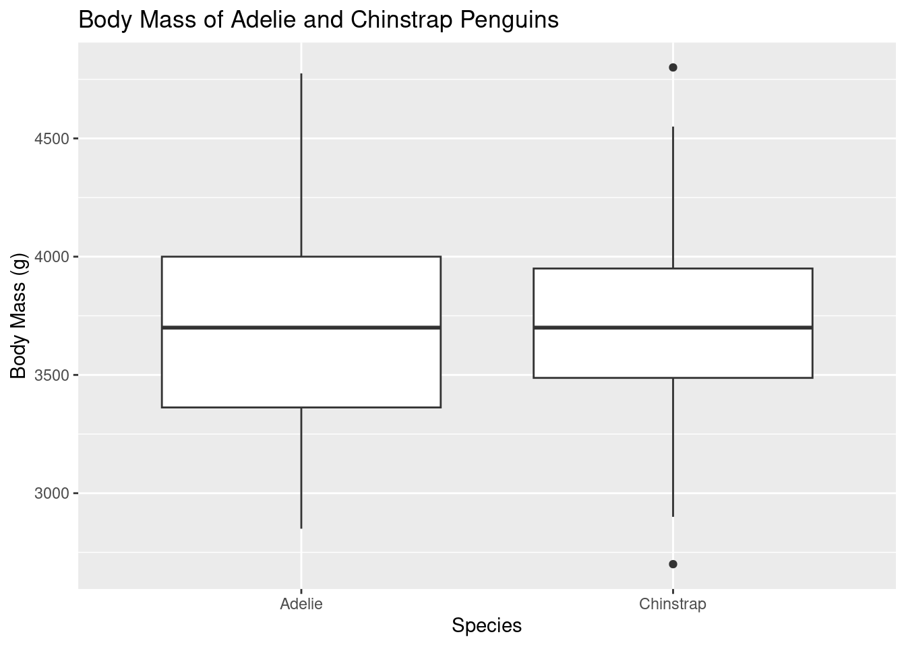
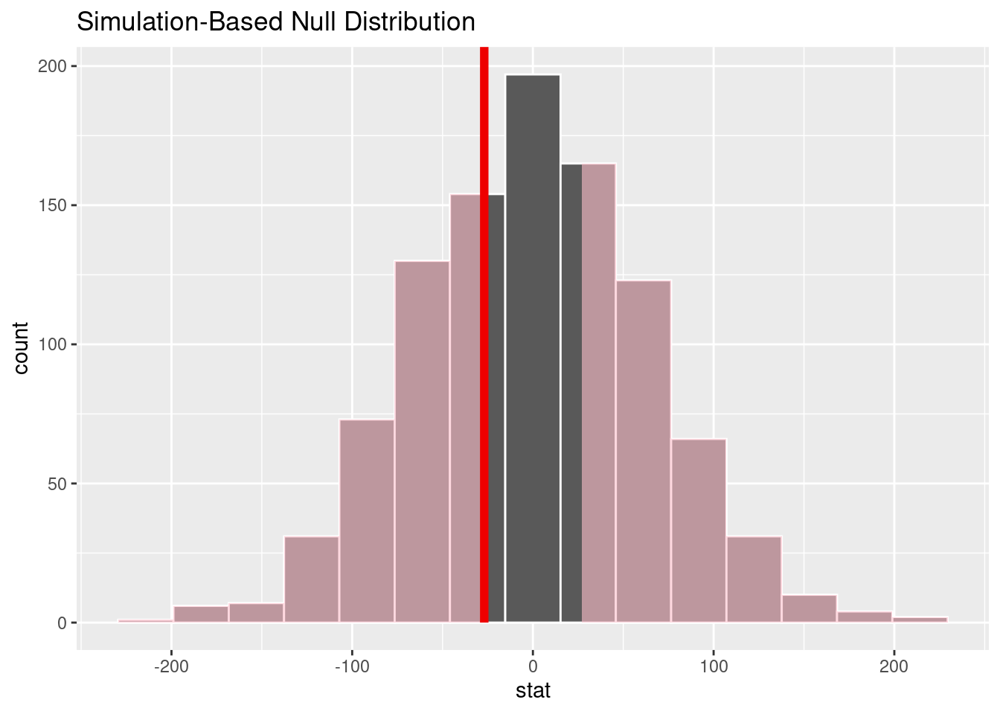
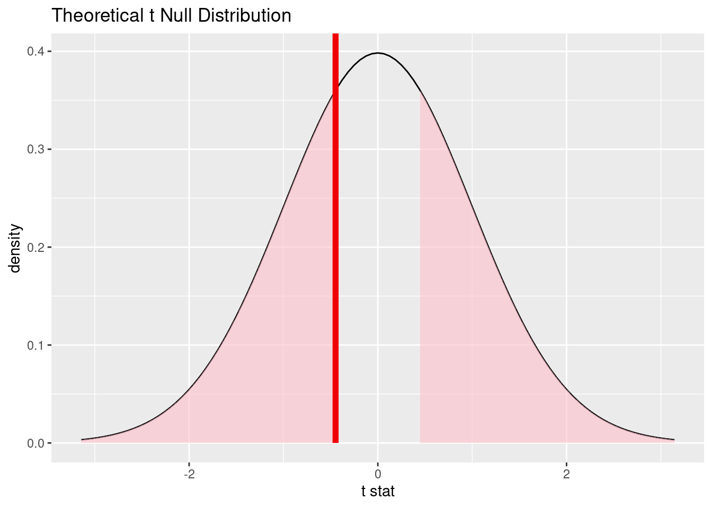
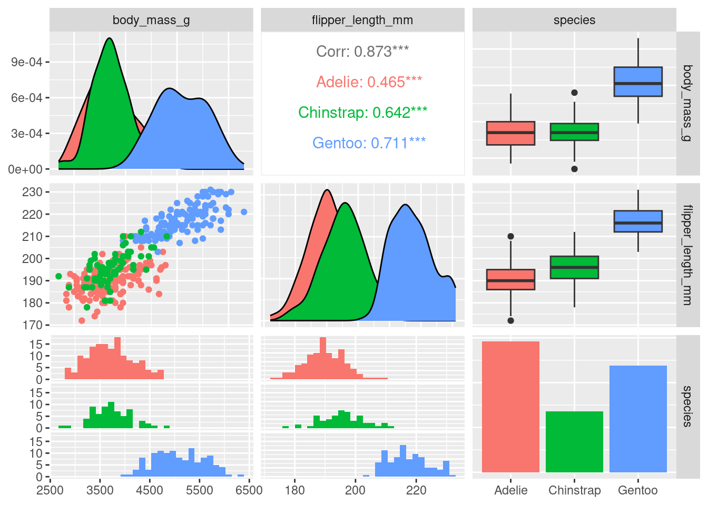
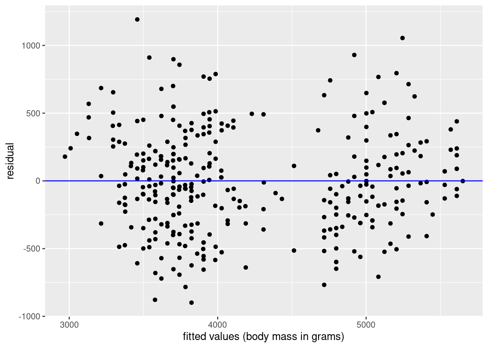
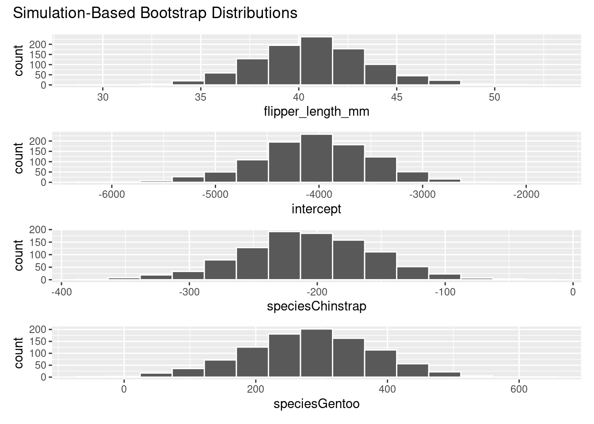
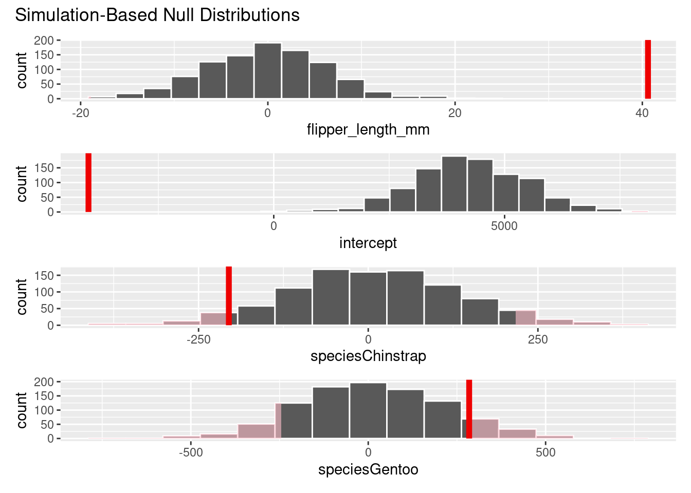

Day 4: Hypothesis Testing and Inference for Regression in R
Session 10: One and Two-Sample Hypothesis Testing
1. Load Necessary Packages
# Load the required packageslibrary(dplyr)
Attaching package: 'dplyr'
The following objects are masked from 'package:stats':
filter, lag
The following objects are masked from 'package:base':
intersect, setdiff, setequal, union
library(ggplot2)library(moderndive)library(infer)# We'll again use `palmerspenguins` for data in this sessionlibrary(palmerpenguins)# We'll use GGally when creating a scatterplot matrix later in Session 11# install.packages("GGally")library(GGally)
Registered S3 method overwritten by 'GGally':
method from
+.gg ggplot2
These packages provide tools for data wrangling, visualization, modeling, and inference.
The infer package is particularly useful for hypothesis testing and confidence intervals.
2. Hypothesis Testing Framework
3. One Sample Mean Problem: Simulation-Based Approach with Bootstrapping
We have recently discovered that the food sources for the penguins near Palmer Station has changed over the last year. There is some evidence that the penguins have more food available to them. Previously the penguins had an average body mass of 4100 grams. Suppose we want to test the claim that the average body mass of penguins is different than this hypothesized value of 4100 grams. We have a sample of 333 penguins from the penguins dataset after removing values.
# Prepare the datapenguins_data <- penguins |>na.omit()# Set hypothesized value for use throughoutmu_hypothesized <-4100# Set significance levelalpha <-0.05# Calculate the observed test statistic (from our sample data)observed_mean_mass <- penguins_data |>observe(response = body_mass_g, stat ="mean")# Can also be done by skipping over the `generate()` stepobserved_mean_mass <- penguins_data |>specify(response = body_mass_g) |>calculate(stat ="mean")
set.seed(2024)# Walk through the infer stepsnull_distribution <- penguins_data |>specify(response = body_mass_g) |>hypothesize(null ="point", mu = mu_hypothesized) |>generate(reps =1000, type ="bootstrap") |>calculate(stat ="mean")
# Visualize the null distribution and p-valuenull_distribution |>visualize() +shade_p_value(obs_stat = observed_mean_mass, direction ="right")

# Retrieve the p-valueboot_p_value <- null_distribution |>get_p_value(obs_stat = observed_mean_mass, direction ="right")boot_p_value
# A tibble: 1 × 1
p_value
<dbl>
1 0.012
Interpret the results of the test
Since the p-value = 0.012 is less than \(\alpha = 0.05\), we reject the null hypothesis. We, therefore, have enough evidence to suggest that the average body mass of penguins is greater than the previously assumed value of 4100 grams.
4. One Sample Mean Problem: Traditional Approach with t-test
We can also use the traditional approach to test the same hypothesis using a \(t\)-test with infer.
# Conduct the t-testobs_stat_t <- penguins_data |>specify(response = body_mass_g) |>hypothesize(null ="point", mu = mu_hypothesized) |>calculate(stat ="t")# Construct the theoretical null distributionnull_dist_t <- penguins_data |>specify(response = body_mass_g) |>assume(distribution ="t")# Visualize the null distribution and p-valuevisualize(null_dist_t) +shade_p_value(obs_stat_t, direction ="right")

# Find the theoretical p-valuet_p_value <- null_dist_t |>get_p_value(obs_stat = obs_stat_t, direction ="right")t_p_value
# A tibble: 1 × 1
p_value
<dbl>
1 0.00790
The interpretation is the same as for the simulation-based test with bootstrapping.
Bonus: This can also be done directly in R, with much less code overall, but not all tests work like this and without a common framework it can get confusing in my opinion.
# Conduct the t-test directly in Rt.test(penguins_data$body_mass_g, mu = mu_hypothesized,alternative ="greater")
One Sample t-test
data: penguins_data$body_mass_g
t = 2.4262, df = 332, p-value = 0.007895
alternative hypothesis: true mean is greater than 4100
95 percent confidence interval:
4134.274 Inf
sample estimates:
mean of x
4207.057
5. Two Sample Mean Problem: Simulation-Based Approach with a Permutation Test
We now want to test the claim that the average body mass of Adelie penguins is statistically discernibly different than the average body mass of Chinstrap penguins.
# Set significance levelalpha <-0.1# Prepare the dataadelie_chinstrap_data <- penguins_data |>filter(species %in%c("Adelie", "Chinstrap")) |># Not necessary, but will remove the warning seen if not donedroplevels()# Calculate the observed test statistic (from our sample data)observed_diff_mean_mass <- adelie_chinstrap_data |>specify(formula = body_mass_g ~ species) |>calculate(stat ="diff in means", order =c("Adelie", "Chinstrap"))
# Do some data visualizationggplot(data = adelie_chinstrap_data, aes(x = species, y = body_mass_g)) +geom_boxplot() +labs(title ="Body Mass of Adelie and Chinstrap Penguins",x ="Species",y ="Body Mass (g)")

set.seed(2024)# Walk through the infer stepsnull_dist <- adelie_chinstrap_data |>specify(formula = body_mass_g ~ species) |>hypothesize(null ="independence") |>generate(reps =1000, type ="permute") |>calculate(stat ="diff in means", order =c("Adelie", "Chinstrap"))
# Visualize the null distribution and p-valuenull_dist |>visualize() +shade_p_value(obs_stat = observed_diff_mean_mass, direction ="two sided")

# Retrieve the p-valuepermute_p_value <- null_dist |>get_p_value(obs_stat = observed_diff_mean_mass, direction ="two sided")permute_p_value
# A tibble: 1 × 1
p_value
<dbl>
1 0.69
Check out ?get_p_value to see the options for direction.
Interpret the results of the test
Since the p-value = 0.69 is greater than \(\alpha = 0.1\), we fail to reject the null hypothesis. We, therefore, do not have enough evidence to suggest that the average body mass of penguins is different for the Adelie group compared to the Chinstrap group.
6. Two Sample Mean Problem: Traditional Approach with t-test
We can also use the traditional approach to test the same hypothesis using a \(t\)-test with infer.
# Conduct the t-testobs_statistic_t <- adelie_chinstrap_data |>specify(formula = body_mass_g ~ species) |>hypothesize(null ="independence") |>calculate(stat ="t", order =c("Adelie", "Chinstrap"))# Construct the theoretical null distributionnull_distro_t <- adelie_chinstrap_data |>specify(formula = body_mass_g ~ species) |>assume(distribution ="t")# Visualize the null distribution and p-valuevisualize(null_distro_t) +shade_p_value(obs_statistic_t, direction ="two sided")

# Find the theoretical p-valuetheory_p_value <- null_dist_t |>get_p_value(obs_stat = obs_statistic_t, direction ="two sided")theory_p_value
# A tibble: 1 × 1
p_value
<dbl>
1 0.654
Bonus: This can also be done directly in R, but requires us to change the format of the data a little bit. We have a t_test() function in infer that wraps the data, so we don’t have to do this extra step.
7. Comparing to Confidence Intervals: Checking for the 0 Value
We can also check if the 0 value is in the confidence interval for the difference in means. If it is, we fail to reject the null hypothesis at the \(\alpha\) level of significance. In order for this to work, \(\alpha\) should be 100% - the confidence level.
# Calculate the confidence intervalboot_dist <- adelie_chinstrap_data |>specify(formula = body_mass_g ~ species) |># hypothesize(null = "independence") |> generate(reps =1000, type ="bootstrap") |># type = "permute") |> calculate(stat ="diff in means", order =c("Adelie", "Chinstrap"))boot_dist |>get_confidence_interval(level =0.9)
The value of 0 is contained in the interval, so it is a plausible value for the difference of \(\mu_{\text{Adelie}} - \mu_{\text{Chinstrap}}\). Thus, from the confidence interval, we fail to reject the null hypothesis. Notice that I used a confidence level of 0.9 to match up with the 0.1 significance level we used earlier.
Session 10 Review Questions
Here are five multiple-choice questions covering the content from Session 10 on One- and Two-Sample Hypothesis Tests:
(10.1) What is the null hypothesis for the one-sample mean test conducted on the penguin body mass data?
A. The mean body mass of penguins is greater than 4100 grams.
B. The mean body mass of penguins is less than 4100 grams.
C. The mean body mass of penguins is different from 4100 grams. D. The mean body mass of penguins is equal to 4100 grams.
(10.2) When performing a two-sample mean test comparing the flipper length between the penguins from the islands of Biscoe and Dream, what does the null hypothesis represent?
A. The flipper length of penguins on Biscoe Island is greater than that of penguins on Dream Island.
B. The flipper length of penguins on Biscoe Island is less than that of penguins on Dream Island.
C. The mean flipper length of penguins on Biscoe Island is equal to the mean flipper length of penguins on Dream Island.
D. The difference in flipper length between penguins on Biscoe and Dream Islands is significant.
(10.3) In the one-sample hypothesis test using bootstrapping, what does a \(p\)-value less than \(\alpha\) indicate?
A. The sample mean is equal to the hypothesized mean.
B. We reject the null hypothesis and have support for the alternative hypothesis.
C. We fail to reject the null hypothesis and conclude that the null hypothesis is true.
D. The sample is not large enough to make any conclusions.
(10.4) What does the shaded area in the null distribution represent when visualizing the hypothesis test?
A. The \(p\)-value, which is the probability of obtaining a test statistic as extreme as the observed one under the null hypothesis.
B. The confidence interval for the difference in means.
C. The mean value of the population.
D. The observed test statistic.
(10.5) In a two-sample means hypothesis test, if the \(p\)-value is greater than the significance level, what can we conclude?
A. We reject the null hypothesis and conclude that the means are statistically different.
B. We fail to reject the null hypothesis and conclude that there is no evidence of a difference in means.
C. The null hypothesis is incorrect.
D. The test is invalid, and no conclusions can be drawn.
Session 10 Review Question Answers
(10.1) What is the null hypothesis for the one-sample mean test conducted on the penguin body mass data?
Correct Answer:
D. The mean body mass of penguins is equal to 4100 grams.
Explanation:
The null hypothesis in this case states that there is no difference between the true mean body mass of penguins and the hypothesized value of 4100 grams.
(10.2) When performing a two-sample mean test comparing the flipper length between the penguins from the island of Biscoe to those from Dream, what does the null hypothesis represent?
Correct Answer:
C. The mean flipper length of penguins on Biscoe Island is equal to the mean flipper length of penguins on Dream Island.
Explanation:
The null hypothesis in a two-sample test asserts that there is no difference between the mean flipper lengths of penguins on Biscoe and Dream Islands, meaning any observed difference is due to random variation in the sample.
(10.3) In a one-sample hypothesis test using bootstrapping, what does a \(p\)-value less than \(\alpha\) indicate?
Correct Answer:
B. We reject the null hypothesis and have support for the alternative hypothesis.
Explanation:
A \(p\)-value below \(\alpha\) suggests that there is sufficient evidence to reject the null hypothesis, meaning the sample data provides evidence that the mean body mass is not 4100 grams.
(10.4) What does the shaded area in the null distribution represent when visualizing the hypothesis test?
Correct Answer:
A. The \(p\)-value, which is the probability of obtaining a test statistic as extreme as the observed one under the null hypothesis.
Explanation:
The shaded region represents the p-value, which quantifies how likely it is to observe a test statistic as extreme or more extreme than the one obtained, assuming the null hypothesis is true.
(10.5) In a two-sample hypothesis test, if the \(p\)-value is greater than the significance level, what can we conclude?
Correct Answer:
B. We fail to reject the null hypothesis and conclude that there is no evidence of a difference in means.
Explanation:
A \(p\)-value greater than the significance level means we do not have enough evidence to reject the null hypothesis, so we conclude that there is no statistically significant difference between the two group means.
Session 11: Inference for Regression
8. Recall One of Our Previous Multiple Linear Regression Models
# Fit a multiple regression model without interaction termsmulti_model_no_interaction <-lm(body_mass_g ~ flipper_length_mm + species, data = penguins_data)# Get regression coefficientscoef(multi_model_no_interaction)
9. Visualize the Relationship Between Predictors and Response
# Focus on only the columns of interestmodel_data <- penguins_data |>select(body_mass_g, flipper_length_mm, species)# Plot a matrix to view the relationships between variablesggpairs(model_data, columns =1:3, mapping =aes(color = species))
`stat_bin()` using `bins = 30`. Pick better value with `binwidth`.
`stat_bin()` using `bins = 30`. Pick better value with `binwidth`.

10. Theory-Based Hypothesis Testing for Regression Coefficients
We can perform hypothesis tests to determine if the regression (partial slope) coefficients are significantly different from zero using the moderndive package.
# Conduct hypothesis tests for regression coefficientsget_regression_table(multi_model_no_interaction)
The p_value column in the output table provides the \(p\)-values for testing the null hypothesis that each coefficient is equal to zero. Each of these p_values is very small, indicating that the coefficients are significantly different from zero. This corresponds to each of them being significant predictors in the model. Note also that none of the confidence intervals in the lower_ci to upper_ci columns contain zero when looking at each row.
# Visualize the fitted values and the residualsggplot(fit_and_res_mult, aes(x = body_mass_g_hat, y = residual)) +geom_point() +labs(x ="fitted values (body mass in grams)", y ="residual") +geom_hline(yintercept =0, col ="blue")

# Visualize the residuals using a QQ plotggplot(fit_and_res_mult, aes(sample = residual)) +geom_qq() +geom_qq_line(col="blue", linewidth =0.5)
The first plot shows the residuals against the fitted values, which should be randomly scattered around the horizontal line at zero. We don’t see much deviation from this line, which is a good sign, and evidence for the both the of assumptions of Linearity and Equal (constant) variance.
We also do not have any reason to assume that Independence is violated based on how the penguins were likely sampled for study.
The second plot shows the residuals against a theoretical normal distribution. The residuals should fall along the line, which they do for the most part. There is a slight deviation at the tails, but this is not a major concern. Thus, the Normality assumption is not violated.
By checking the LINE acrostic, we can feel confident in the model fit and assumptions.
12. Bootstrap Confidence Intervals for Regression Coefficients
We can also use simulation-based inference to test the significance of the regression coefficients. Here, we will use bootstrapping to generate confidence intervals for the partial slope coefficients. Bootstrapping now bootstraps the entire row of data, instead of just a single variable
# Get the observed model fitobserved_fit <- penguins_data |>specify(formula = body_mass_g ~ flipper_length_mm + species) |>fit()observed_fit
# Bootstrap distribution for the partial slope coefficientsset.seed(2024)mlr_resamples <- penguins_data |>specify(formula = body_mass_g ~ flipper_length_mm + species) |>generate(reps =1000, type ="bootstrap")# Then fit a linear regression model to each replicate of databootstrap_models <- mlr_resamples |>fit()bootstrap_models
# Visualize the bootstrap distribution for the partial slope coefficientsvisualize(bootstrap_models)

# Get the confidence intervals for the partial slope coefficientsconfidence_intervals_mlr <- bootstrap_models |>get_confidence_interval(level =0.95,type ="percentile",point_estimate = observed_fit)confidence_intervals_mlr
13. Hypothesis Tests for Regression Coefficients using Permutation Tests
# Generate the null distributions for each of the regression coefficientsnull_distribution_mlr <- penguins_data |>specify(formula = body_mass_g ~ flipper_length_mm + species) |>hypothesize(null ="independence") |>generate(reps =1000, type ="permute") |>fit()# Visualize and shade the p-value for each regressornull_distribution_mlr |>visualize() +shade_p_value(obs_stat = observed_fit, direction ="two sided")

# Get the p-valuesnull_distribution_mlr |>get_p_value(obs_stat = observed_fit, direction ="two-sided")
Warning: Please be cautious in reporting a p-value of 0. This result is an approximation based on the number of `reps` chosen in
the `generate()` step.
ℹ See `get_p_value()` (`?infer::get_p_value()`) for more information.
Please be cautious in reporting a p-value of 0. This result is an approximation based on the number of `reps` chosen in
the `generate()` step.
ℹ See `get_p_value()` (`?infer::get_p_value()`) for more information.
We see different results for species Gentoo with the simulation-based methods. Further analysis should be done to check the normality assumption on the Gentoo data.
Session 11 Review Questions
(11.1) What is the null hypothesis when performing a hypothesis test on a regression coefficient in a multiple regression model?
A. The coefficient is significantly different from zero.
B. The coefficient is equal to the observed mean.
C. The coefficient is equal to zero, indicating no effect of the predictor on the response variable.
D. The coefficient is greater than zero, indicating a positive effect of the predictor on the response variable.
(11.2) When interpreting the p-value for a regression coefficient, what does a small \(p\)-value (e.g., < 0.05) indicate?
A. The predictor is not a significant variable in the model.
B. There is strong evidence against the null hypothesis, suggesting the coefficient is significantly different from zero.
C. The model fit is poor, and assumptions of linearity are violated.
D. The residuals are not normally distributed.
(11.3) In multiple regression, what does it mean when a confidence interval for a regression coefficient does not contain zero?
A. The coefficient is not statistically significant.
B. The coefficient is equal to zero.
C. The residuals are randomly distributed around zero. D. The coefficient is statistically significant/discernible, and the predictor has an effect on the response variable.
(11.4) Why is it important to check the residuals of a multiple regression model using diagnostic plots like the residual plot and the QQ plot?
A. To ensure that the response variable is correctly predicted by the model.
B. To verify that the assumptions of linearity, normality, and constant variance are not violated.
C. To determine the p-value for each coefficient in the model.
D. To check if the confidence intervals contain zero.
(11.5) What is the purpose of bootstrapping in the context of multiple regression?
A. To simulate many different regression models and estimate the sampling distribution of the regression coefficients.
B. To generate random samples from the population to estimate new coefficients.
C. To test the normality of the residuals.
D. To calculate the exact p-values for the regression coefficients.
Session 11 Review Question Answers
(11.1) What is the null hypothesis when performing a hypothesis test on a regression coefficient in a multiple regression model?
Correct Answer:
C. The coefficient is equal to zero, indicating no effect of the predictor on the response variable.
Explanation:
The null hypothesis in a regression test is that the coefficient equals zero, meaning the predictor does not significantly influence the response variable.
(11.2) When interpreting the p-value for a regression coefficient, what does a small p-value (e.g., < 0.05) indicate?
Correct Answer:
B. There is strong evidence against the null hypothesis, suggesting the coefficient is significantly different from zero.
Explanation:
A small p-value suggests that the coefficient is statistically significant and that the predictor has an effect on the response variable.
(11.3) In multiple regression, what does it mean when a confidence interval for a regression coefficient does not contain zero?
Correct Answer:
D. The coefficient is statistically significant, and the predictor has an effect on the response variable.
Explanation:
If the confidence interval does not contain zero, the coefficient is considered significant, indicating that the predictor likely has an effect on the response variable.
(11.4) Why is it important to check the residuals of a multiple regression model using diagnostic plots like the residual plot and the QQ plot?
Correct Answer:
B. To verify that the assumptions of linearity, normality, and constant variance are not violated.
Explanation:
Diagnostic plots help confirm that the model assumptions (linearity, normality, constant variance) are satisfied, ensuring the validity of the regression results.
(11.5) What is the purpose of bootstrapping in the context of multiple regression?
Correct Answer:
A. To simulate many different regression models and estimate the sampling distribution of the regression coefficients.
Explanation:
Bootstrapping resamples the data and fits new regression models to estimate the sampling distribution of the coefficients, allowing for confidence intervals and significance tests.
Session 12: Storytelling with Data
14. Let’s Load the tidyverse
# install.packages("tidyverse")library(tidyverse)
── Attaching core tidyverse packages ──────────────────────────────────────────────────────────────── tidyverse 2.0.0 ──
✔ forcats 1.0.0 ✔ stringr 1.5.1
✔ lubridate 1.9.3 ✔ tibble 3.2.1
✔ purrr 1.0.2 ✔ tidyr 1.3.1
✔ readr 2.1.5
── Conflicts ────────────────────────────────────────────────────────────────────────────────── tidyverse_conflicts() ──
✖ dplyr::filter() masks stats::filter()
✖ dplyr::lag() masks stats::lag()
ℹ Use the conflicted package (<http://conflicted.r-lib.org/>) to force all conflicts to become errors
There are more packages in the tidyverse that we don’t cover much in the book, but I’ve found incredibly useful for data wrangling:
forcats for working with factors
stringr for working with strings
purrr for working with functions
# This is the same as running each of these individuallylibrary(ggplot2)library(dplyr)library(readr)library(tidyr)library(tibble)library(purrr)library(stringr)library(forcats)
There are even more packages loaded than this though. Check out the full list on the tidyverse page.
The infer package is part of the tidymodels collection of packages that are designed to work well with the tidyverse for modeling and inference too.
There’s so much more we could cover in this course. Check out Chapter 11 of ModernDive Second Edition for an overview as well. I hope you’ve gotten a good amount of tools and theory to help you get started with data analysis and statistics in R using the tidyverse, moderndive, and infer to wrangle, visualize, model, and infer from your data. Go tell your story with data!